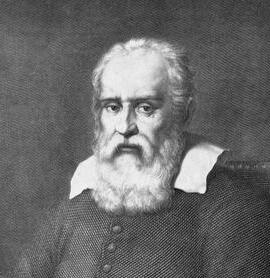
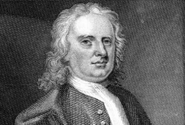
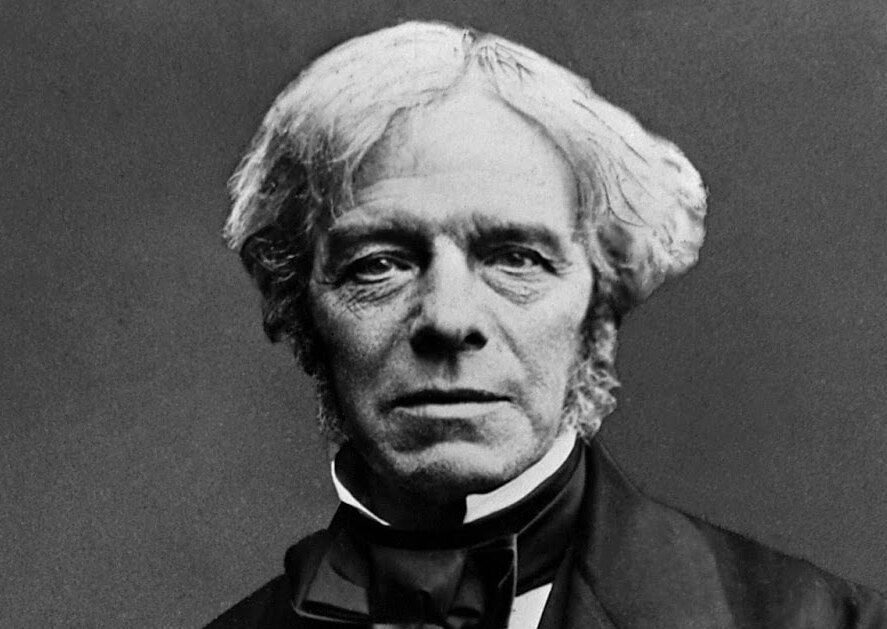
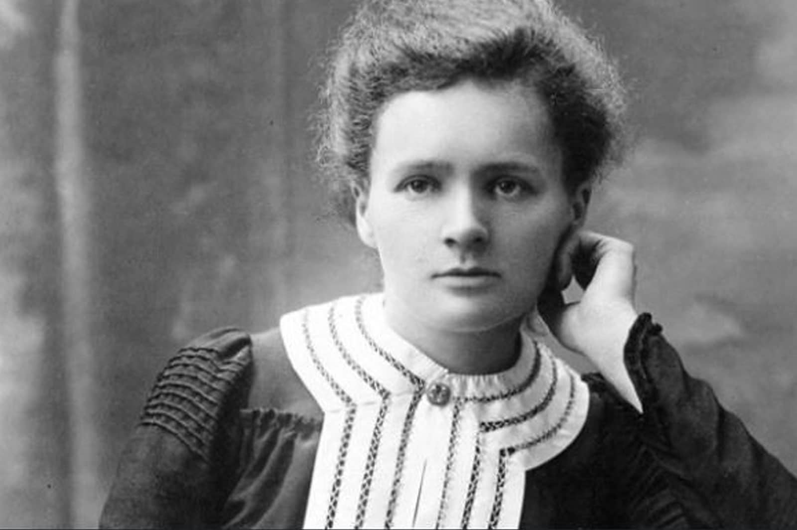
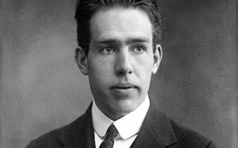
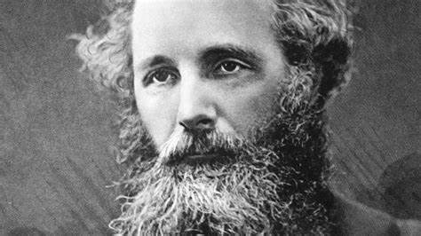
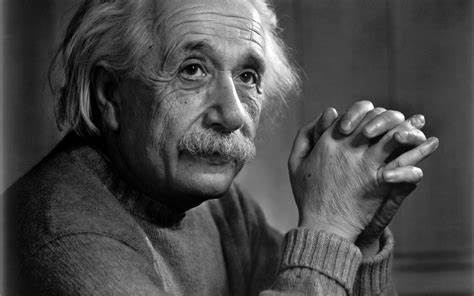
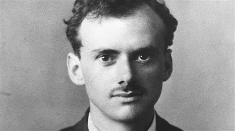
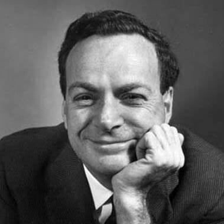

Cientificos de patrimonio humano
Aqui podrás ver la informacion mas importante sobre los cientificos mas reconocidos, galardonados por sus respectivos premios Nobel por increibles descubrimientos que ayudaron al desarrollo del planeta que conocemos hoy. Por ello hoy creamos esta seccion para darle un reconocimiento mayor a estas personas que han sido valuartes muy importantes para el progreso de este mundo
Estos son algunos de ellos
Galileo Galilei (1564-1642)
Nacido en Pisa, Italia, se formó inicialmente como médico, pero tras conocer la invención del telescopio en 1609, construyó el suyo propio y dirigió su inquietud al cielo y el Universo. Reveló la existencia de las manchas solares, descubrió una superficie montañosa en la Luna y estudió los planetas y satélites. Sus estudios también asentaron el apoyo a la idea de que la Tierra giraba alrededor del sol. Esto llevó a Galileo a tener considerables problemas con la Iglesia católica y se vio obligado a abandonar esa defensa en 1633 tras un convulso juicio inquisitorio. Su trabajo sobre la caída de cuerpos también sentó las bases de las teorías posteriores de Newton.
Isaac Newton (1643-1727)
Considerado uno de los inventores del cálculo, así como un excelente matemático. Realizó contribuciones extremadamente importantes a la ciencia de la óptica. El célebre británico describió las leyes de la mecánica clásica que sustentaron la base de la física clásica, llamada física Newtoniana, durante casi 500 años. Dentro del logro más conocido, Newton esbozó el principio de la gravedad, que explicaba cómo los planetas giran alrededor del sol. Archiconocido en vida, recibió multitud de honores, entre ellos la presidencia de la Royal Society.
Michael Faraday (1791-1867)
Faraday fue principalmenteautodidacta, y se convirtió en uno de los mejores científicos de su época gracias al patrocinio del eminente químico inglés Humphry Davy, quien lo contrató como asistente en 1813. Faraday contribuyó a la creación de la idea de Campo electromagnético y descubrió la inducción electromagnética y las leyes de la electrólisis. Sus dispositivos electromagnéticos sentaron la base de la tecnología actual de motores eléctricos. Como curiosidad sobre su personalidad, rechazó dos veces el título británico de caballero y cuando se le pidió consejo sobre armas químicas para la guerra de Crimea, se negó por razones éticas. Einstein mantuvo en la pared de su estudio una pared del gran físico Faraday, junto con las de Newton y Maxwell.
Marie Curie (1867-1934)
La primera mujer en ganar un Nobel y la primera persona en ganar dos Nobel distintos. Sin duda una de las grandes personalidades físicas de la historia de la humanidad. Nació en Polonia y ganó su primer Nobel en 1903 junto a su esposo, Pierre, por descubrimiento de la radioactividad. Sin embargo, no se le permitió participar en la conferencia magistral que dan los ganadores porque era una mujer. Tras la muerte de su marido en un accidente de tráfico en 1906, ganó su segundo Nobel en 1911 por descubrir el elemento químico radio, aunque la sociedad de la época trató de quitárselo cuando surgieron noticias de su relación con su colega Paul Langevin. Como no podía ser menos recibió la condena de la prensa francesa por su vida personal. El tiempo ha cambiado esa percepción por suerte.
Niels Bohr (1885-1962)
Estableció la idea actual del átomo, que tiene un núcleo en el centro con electrones que giran alrededor de él. Y que cuando los electrones se mueven de un nivel de energía a otro, emiten una cantidad discreta de energía. Su trabajo le valió a Bohr un premio Nobel en 1922. En 1954, ayudó a establecer el Cern, el laboratorio europeo de física de partículas. Además de su propia contribución a la física, su hijo, Aage, ganó un Nobel en 1975 por su investigación sobre núcleos atómicos. Como dato curioso y simpático sin duda, la cervecería Carlsberg le otorgó a Bohr un regalo especial: una tubería que conectaba su propia casa con la cervecería situada al lado, lo que le proporcionó cerveza gratis para toda la vida.
James Clerk Maxwell (1831-1879)
A diferencia de los Newton y Einstein, el escocés es prácticamente desconocido para el público en general. Sin embargo, su contribución a la física fue tanto o más importante principalmente por su descubrimiento de la teoría del electromagnetismo. Y las famosas fórmulas de Maxwell que describen el electromagnetismo. Demostró que la electricidad, el magnetismo y la luz son todas manifestaciones del mismo fenómeno, el campo electromagnético. El desarrollo de la radio, la televisión y el radar fueron consecuencias directas de sus trabajos. Maxwell también realizó trabajos pioneros en óptica y visión de los colores.
Albert Einstein (1879-1955)
Tres grandes teorías definen nuestro conocimiento físico del universo: la relatividad, la mecánica cuántica y la gravitación. La primera es la obra del famoso físico alemán, quien sigue siendo el físico con la mayor reputación de la actualidad. Su trabajo demostró que el espacio y el tiempo no son inmutables, sino que son fluidos y maleables. Einstein obtuvo la ciudadanía estadounidense en 1940 y enseñó al mundo quizás su ecuación más famosa, E = mc2, que demuestra la equivalencia entre masa y energía. Su nombre se ha convertido en sinónimo de genio y murió como una auténtica celebridad. Fue galardonado con el premio Nobel de física de 1921.
Paul Dirac (1902-84)
Una de las figuras más veneradas, y más extrañas, de la física. Hijo de padre suizo y madre inglesa, nació en Bristol. Rechazó el título de caballero porque no quería que la gente usara su primer nombre, mientras que su hija, Mónica, nunca lo recordó riéndose. «Este equilibrio en el camino vertiginoso entre el genio y la locura es horrible», dijo Einstein de él. Predijo la existencia de antimateria, creó algunas de las ecuaciones clave de la mecánica cuántica y sentó las bases de la industria microelectrónica actual. Dirac ganó un Nobel en 1933, pero siguió siendo «un geek eduardiano», según el biógrafo Graham Farmelo.
Richard Feynman (1918-1988)
Sin duda uno de los físicos más influyentes, conocidos y excéntricos del siglo XX, jugó un papel clave en el desarrollo de la electrodinámica cuántica, la teoría que describe cómo interactúa la luz y la materia, que le valió un premio Nobel en 1965. Feynman también realizó contribuciones importantes en los campos de la computación cuántica y la nanotecnología y fue miembro de la Comisión Rogers que investigó la destrucción del transbordador espacial Challenger de la NASA en 1986. Tocaba la batería, afirmaba que experimentaba con drogas y que trabajaba en bares de topless porque decía que le ayudaba a concentrarse. Feynman murió en 1988, a los 69 años.